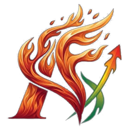

Ablaze FXCopies the Ablaze coaches' calls for you, with a stop loss on every trade and a daily loss limit that stops revenge trading.
Download for WindowsVersion 2.44.2 · Windows only. If Windows says "Windows protected your PC", click More info then Run anyway.
Free for the Ablaze community
Everything in Ablaze FX is free, Copy Trading included, on any broker that offers MetaTrader 5.
Set up in 4 steps
- Get added to the Ablaze signal channels on Telegram.
- Install your broker's MetaTrader 5, log in to your account and open it once.
- Download and install Ablaze FX, then follow its short setup.
- In Copy Trading, connect your Telegram, add money to your copy wallet, switch on the coaches you want and set how much each one gets.
What you get
- Copy Trading: the coaches' calls open by themselves, even while you sleep.
- Lockout: daily loss limit and a cooldown after losses that you can't undo.
- Trade: every trade sized to the risk you choose.
- Paste a signal: paste a call and it places the entries, stop and targets.
- AI bot: tested rules that trade for you, on paper first.
- Journal and Results: see what's working.
- Updates install with one click.
You'll need
- A Windows PC (no Mac) with your broker's MetaTrader 5 installed
- A trading account at a broker that offers MetaTrader 5
- The PC left on with Ablaze FX running: it copies only while it's open (closing the window is fine)
- A Telegram account that's in the Ablaze signal channels
Trading carries a high risk of losing money. Past results don't guarantee future results.